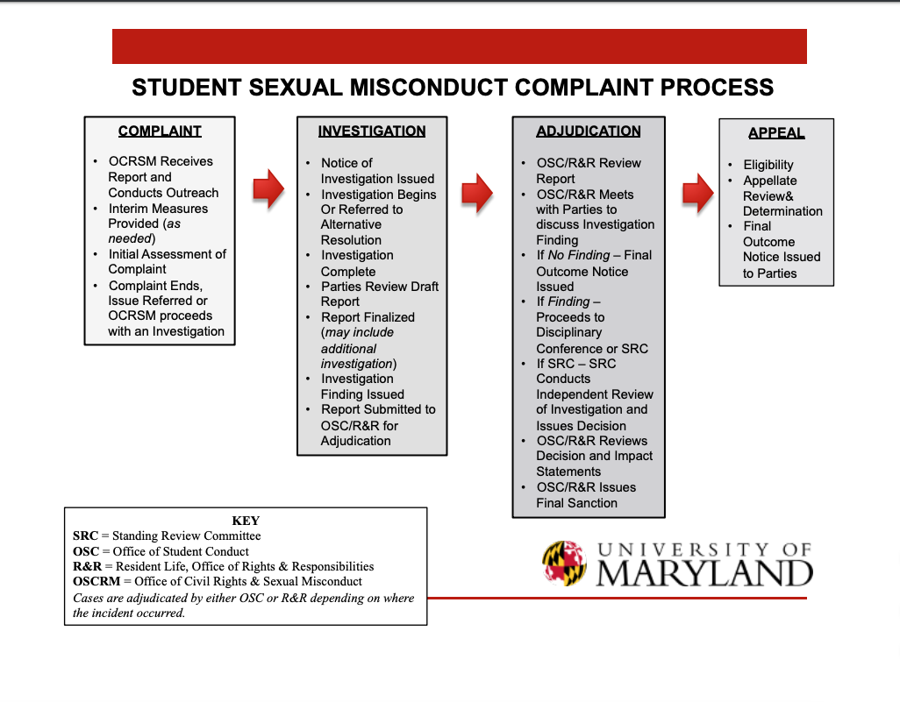

From understanding consent to the process of reporting sexual assault, the University of Maryland is working to re-shape awareness, prevention and education when it comes to sexual assault.
What is Consent?
"Consent is a mutual and non-coerced agreement between participants of a sexual encounter. Consent does not always have to be verbal communication but that can help clearly define boundaries” said an anonymous graduate student in a survey conducted about consent.
Many other survey participants agreed that consent is mutual and gives permission. Yet, even with knowing what consent is, it’s important to understand how far consent goes into the act of intimacy.
On Thursday, November (enter date), UMD’s Student Government Association hosted Reclaim the Red: Moving Forward, an event geared towards the conversation of sexual assault awareness. Grace Fansler, prevention and education program coordinator at the Maryland Coalition Against Sexual Assault, gave a presentation that covered everything from consent to the presence of alochol in sexual assault situations.
“Consent is a continual conversation,” Fansler said as she spoke to the necessary boundaries that each party should establish and respect during intimate situations.
Verbal Consent before Sexual Activity
Students responded whether or not they give verbal consent each time before engaging in sexual activity
Source: Data collected by Victoria DanielsDuring the survey 95% of the participants said that consent can be revoked at any point during sex, while 5% said that it cannot be revoked. Here lies a problem. Fansler stated that consent is continuous, meaning that at any point during intimacy, a party can revoke consent and wish to stop the interaction.
This same lack of knowledge on the timeline of consent is what Maya Dayanim, an e-board member of Preventing Sexual Assault, believes is the main issue when it comes to sexual assault on college campuses.
“It’s more of a passive choice not to ask for it,” said Dayanim and thats why PSA, the first and only student-ran organization on campus dedicated to sexual assault, strives to promote awareness through education.
Students in the survey had varied answers when asked do they verbally consent each time before engaging in sexual activity, with the majority saying that they do not verbally consent.
CARE to Stop Violence
As the data reflects, there is a large grey area when it comes to students understanding the fundamentals and principles of consent. That’s why Campus Advocates Respond and Educate to Stop Violence have created two workshops dedicated to tackling this tough topic.
As listed on their website, CARE to Stop Violence provides free, confidential advocacy and therapy services to primary and secondary survivors of sexual assault, relationship violence, stalking and sexual harrassment. With this advocacy comes workshops, presentations and outreach activities.
“The C Word is Consent” focuses on deconstructing common rape myths and defining consent, coercion and victim-blaming said Max Balagtas-Badoy, program management specialist for CARE to Stop Violence. This workshop has been held 14 times this year and has reached 638 participants.
The second workshop targets the the athletic community at UMD.”Consent and Communications” works on bridging the gap between consent and communication. This newer workshop has reached 17 teams and a total of 450 student athletes so far.
The “by students, for students” method of these workshops falls directly in the goals of this organization as they strive for student to student advocacy. CARE is a confidential resource meaning that students can seek help related to incidents without it being reported to UMPD or the Office of Civil Rights and Sexual Misconduct.
“One of the most significant benefits of using a service like CARE is our ability to maintain confidentiality” said Balagtas-Badoy. “We do not force or pressure anyone to take specific steps.”
Staff is only required to report incidents of childhood sexual abuse or anything that is in an immediate threat to safety, otherwise the advocates and therapists are dedicated to hearing survivors and helping them heal in whatever way that survivor needs. Balagtas-Badoy says that a helpful part of the healing process is “allowing survivors to regain power and control over their situation can be very helpful for healing process.”
Office of Civil Rights and Sexual Misconduct
The Office of Civil Rights and Sexual Misconduct is another entity on campus that works with sexual assault. They are responsible for overseeing and implementing the University’s compliance with Title IX, federal and state civil rights laws and regulations, according to a statement from the office.
OCRSM declined an interview request and only provided a blanket statement via email in response to detailed questions.
“OCRSM oversees the University’s response to all reports of sexual misconduct made in connection with University-sponsored programs and activities involving members of the University community-when the sexual misconduct impedes equal access to any education program or activity or adversely impacts the education or employment of a community member, regardless of where the conduct occurred; and/or that otherwise threatens the health and/or safety of a member of the campus community”
In addition to the statement, they sent a pdf outlining the student sexual misconduct complaint process.
While implementing campus-wide civil rights compliance training and mandatory sexual misconduct training for everyone, the office “strives to foster an inclusive campus.”